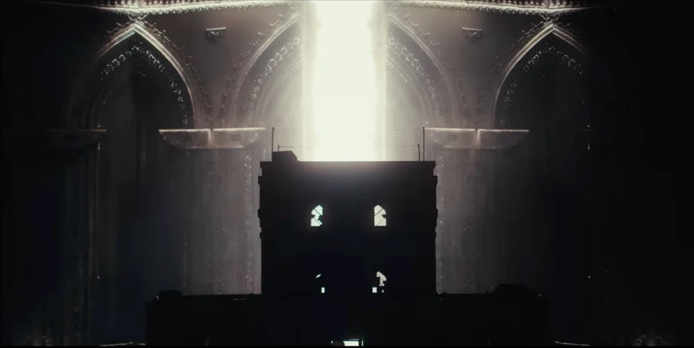

YouTube
Me atthe zoo
ภาพนิ่งตัวอย่าง · ไม่มีการเล่นวิดีโอในพรีวิว

YouTube Music
SãoPaulo
ภาพนิ่งตัวอย่าง · ไม่มีการเล่นเสียงในพรีวิว
ลองอีกหน้าจอ
ตัวอย่าง YouTube และ Music
YouTube
ภาพนิ่งตัวอย่าง · ไม่มีการเล่นวิดีโอในพรีวิว

YouTube Music
ภาพนิ่งตัวอย่าง · ไม่มีการเล่นเสียงในพรีวิว
ตัวอย่าง YouTube และ Music